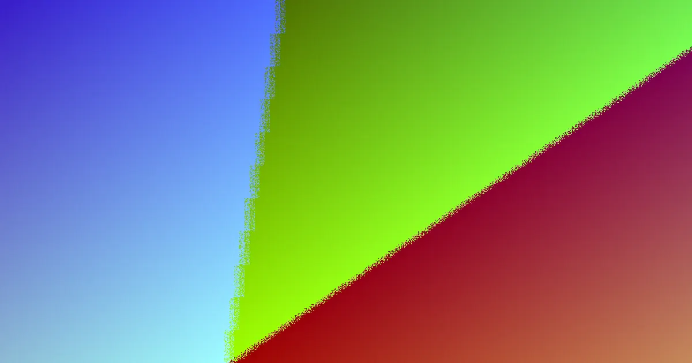

Local fencing projects rely on specific terminology to ensure accurate quotes and legal compliance. This glossary defines the six primary job types, the Queensland Dividing Fences Act timeline, and site assessment terms used by Noosa contractors.
For local buyers, fencing contractors noosa glossary Knowing these terms clarifies the scope before work begins.
Fencing Contractors Noosa Glossary Explained
Fencing projects in Noosa generally fall into one of six distinct job categories. Understanding these definitions helps you communicate effectively with contractors. Colorbond steel is a common choice for coastal properties due to its resistance to salt air and wind. Timber remains a popular option for established hinterland streets, offering a natural aesthetic that suits traditional homes. Pool fencing is a specialised category focused on safety compliance and inspection pathways rather than just aesthetics. Aluminium slat screens provide a modern coastal look, balancing privacy with street presentation. Rural fencing is designed for acreage and paddock boundaries, prioritising line strength and strain management. Finally, gates and automation are often scoped as a separate but integrated component, involving sliding, swing or solar powered mechanisms.
Queensland Dividing Fence Law Terms
Legal terminology is crucial when dealing with shared boundaries. The term sufficient fence refers to the standard required by law under the Neighbourhood Disputes (Dividing Fences and Trees) Act 2011. If an adjoining owner desires a fence that exceeds this standard, they must cover the difference in cost. The process begins with a notice to contribute, which triggers a strict timeline. Adjoining owners have one month to reach an agreement after this notice is issued. If agreement cannot be reached within that period, an application to the Queensland Civil and Administrative Tribunal (QCAT) is possible within two months of the notice. A written description of the work and at least one quote should precede these formal steps.
Site Assessment and Scope Terms
Accurate quotes depend on precise site terminology. Exposure describes how much wind and sun the fence line receives, which dictates material durability. A beachfront boundary has high exposure, while a sheltered street does not. Returns refer to the corners of the fence line, which often require specific treatment to ensure structural integrity. Making good is the process of removing and disposing of old fence posts and debris before the new fence is installed. Footings or piers are the concrete bases that support the posts, and their depth is determined by ground conditions and slope. Access constraints describe how a contractor will reach the fence line, which can impact the cost of labour and machinery.
Material Specifics for Noosa
Local environmental factors heavily influence material selection. Retaining walls can affect the required height of a fence and must be accounted for in the design. Corner blocks often require specific sight line treatments to ensure safety and compliance. For coastal areas like Noosa Heads and Marcoola, the salt air and wind are primary considerations, making Colorbond and aluminium slat strong contenders. In contrast, the established streets of the hinterland often favour timber for its traditional appearance. When comparing quotes, ensure the contractor defines these site-specific terms clearly so the scope matches your property's reality.
- Identify the job type. Determine if your project requires a privacy screen, a pool barrier, a rural containment line or a driveway gate.
- Check the legal status. Verify if the boundary is shared and understand the Queensland Dividing Fences Act notice period.
- Prepare site details. Note the fence length, any corners or returns, ground slope, and access points for the contractor.
- Review the quote. Ensure the quote includes removal, disposal, gate hardware, and specific assumptions about footings.
- Confirm material suitability. Choose materials that suit the local environment, such as steel for coastal areas or timber for established streets.
| Material Type | Best Use | Key Consideration |
|---|---|---|
| Colorbond | Coastal boundaries | Salt air and wind resistance |
| Timber | Hinterland streets | Natural aesthetic and privacy |
| Pool Fencing | Safety barriers | Compliance and inspection |
| Aluminium Slat | Coastal frontages | Privacy and style balance |
| Rural Fencing | Acreage and paddocks | Line strength and strain |
| Gates | Driveway access | Automation and operation |
Common questions
What is a sufficient fence? A sufficient fence is the standard height and type required by law under the Queensland Dividing Fences Act 2011 for a shared boundary.
How long do I have to agree on a fence? Adjoining owners have one month to reach an agreement after a notice to contribute is issued.
What does making good mean? Making good refers to the removal and disposal of old fence posts and debris before the new fence is installed.
This glossary provides essential terminology for Noosa fencing projects.